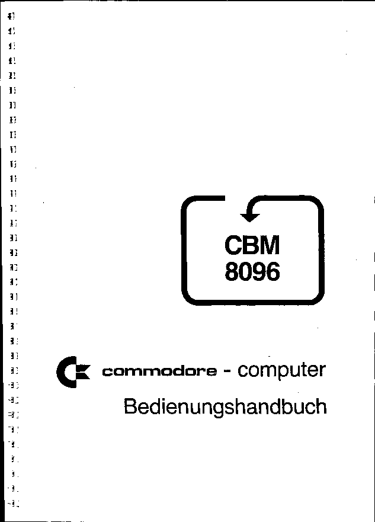

This document has been slightly html-ized by A. Fachat
A postscript version that shows more text formatting is available in Los96-de.ps.gz
Tue Apr 7 10:50:13 MEST 1998
CBM 8096 Commodore Computer Users Manual e-Version 1.0, as of 20 Mar 1998 This is the (german) electronic copy of the 8096 Users Manual. It is in fact an addendum to the CBM 8032 Users Manual, as the 8096 is an 8032 with an additional 64kByte RAM on an extension board. It describes the Commodore LOS-96 `operating system`, that is, in fact, an improved BASIC. It loads into the normal 32k and uses the 64k of the expansion board for BASIC program (32k) and variables (32k). The appendices that describe the hardware differences are missing, though. The document has been scanned and OCR's by A. Fachat in march 1998, after receiving a copy from Olaf Seibert (Thanks for that!). Proofreading by A. Fachat also. The rest of the document is german, so only one remark: The printer that printed this document couldn't print the "^" and the "<". Also it couldn't print the "@" and the "#" and replaces them with "ß" and "¶" resp. In addition to this document the Users Manual for the 8096 LOS-KIT is available. This Kit is an improved programming environment for LOS-96. Dies ist das deutsche Bedienungshandbuch des Commodore 8096 Computers (in elektronischer Form). In der Tat ist es nur ein Addendum zum CBM 8032 Handbuch, da der 8096 nur ein 8032 mit zusätzlichen 64kByte RAM auf einer Erweiterungsplatine ist. Es beschreibt Commodores LOS-96 `Betriebssystem', das eigentlich nur ein verbessertes BASIC ist. Es wird in die normalen 32k RAM geladen und nutzt die 64k des Erweiterungsboards für Variablen (32k) und BASIC Programm (32k). Die Anhänge die die Hardware beschreiben fehlen leider. Das Dokument wurde von im März 1998 von A. Fachat gescannt und OCR't, nachdem eine Kopie von Olaf Seibert zur Verfügung gestellt wurde (Vielen Dank!). Gegengelesen wurde ebenfalls von A. Fachat. Der Drucker, der das Original gedruckt hat konnte kein "^" und kein "<" drucken. Außerdem ersetzte er das "@" durch ein "ß" und das "#" durch ein "¶". Zusätzlich zu diese Dokument gibt es das Bedienungshandbuch zum 8096 LOS-KIT, einer verbesserten Programmierumgebung für LOS-96 20. Mar. 1998 A. Fachat
Inhaltsverzeichnis 1. Üersicht über Eigenschaften und Änderungen gegenüber BASIC-4 2. Generelle Eigenschaften 2.1 AUTO-Start 2.2 LOAD , "prg" 2.3 Aufteilung des Speicherplatzes 2.4 Logische und physikalische Adressen 2.5 Änderung der Aufteilung des BASIC-Speicherbereiches 2.6 BASIC-Stack 2.7 Programmänderungen ohne Variablenverlust / Overlay 2.8 Neue Tasten-Funktionen durch ESC 2.9 Automatische Zeilennummerierung 2.10 Eingabe überlanger Zeilen 2.11 Über den Gebrauch von vielen Statements in einer Programm-Zeile 2.12 Fehlermeidungen 2.13 Cassettenverwaltung und Floppy-Voreinstellung 2.14 INPUT kann 255 Bytes lesen 2.15 Zero-Page-Adressen / Tastaturpuffer 2.16 ROM 3. Geänderte oder neue BASIC-Anweisungen 3.1 LOAD 3.2 SAVE 3.3 VERIFY 3.4 LIST 3.5 DELETE 3.6 FRE 3.7 CLR 3.8 REDIM 3.9 RESTORE 3.10 POKE / PEEK / SYS / WAIT 3.11 Getstring 3.12 Instring 3.13 Midstring 3.14 ASC / CHR$ 3.15 CATALOG$ 3.16 IF THEN ELSE 3.17 ON ERROR GOTO / EL, EC, EO / RESUME 3.18 DISPOSE 3.19 INPUT / PRINT@(zeile,spalte) 3.20 USING 3.21 INPUT USING Anhänge: Einbau der Platine Eigenschaften der Hardware / Umschaltung der 32K-Pages Kurze Beschreibung des Disketteninhaltes
1. Übersicht über Eigenschaften von LOS-96 und Änderungen gegenüber BASIC-4 Alle Eigenschaften von BASIC-4 bzw. des CBM 8032 werden als bekannt vorausgesetzt. Dieses Handbuch ist eine Ergänzung zum CBM 8032 Handbuch, keinesfalls ein Ersatz dafür! LOS-96 (Loadable Operating System for 96K Machine) ist ein BASIC-4 kompatibles BASIC/Betriebssystem für CBM 8096 (CBM 8032 mit 64K-Erweiterungsplatine von Commodore). LOS-96 wird auf Tastendruck von Diskette in den RAM geladen und stellt für BASIC 64K Arbeitsspeicher zur Verfügung, unterteilt in 32K für Programm und 32K für Variable. Die folgenden Stichpunkte sollen eine schnelle Übersicht geben. Ausführliche Informationen darüber finden sich anschließend. BASIC-Stack (unbegrenzte FOR / GOSUB Tiefe) Programmänderung ohne Variablenveriust vereinfachtes OVERLAY ESC-Tastenfunktionen für ASCII-CTL-Codes und Screen Editor Automatische Zeilennumerierung löschen von Zeilenbereichen BASIC-Zeilen bis zu 250 Bytes Länge Fehlermeldung mit Angabe der Fehlerstelle keine Rekorderverwaltung mehr Voreinstellung 8 für Gerät bei LOAD / SAVE / VERIFY INPUT kann 255 Zeichen lesen CALL bzw FUNC für zusätzlich ladbare Maschinen-Routinen erweiterte und neue BASIC-Anweisungen siehe Inhaltsverzeichnis
2. Generelle Eigenschaften 2.1 Auto-Start Wenn LOS-96 die erste Datei auf Diskette ist, kann nach dem Einschalten der Anlage LOS-96 mit SHIFT/RUN geladen und gestartet werden. Anderenfalls wird LOS-96 aus BASIC-4 durch DLOAD "LOS*" geladen und mit RUN gestartet. In jedem Fall versucht LOS-96 nach seinem Start das Programm "START*" von einer der beiden Disketten von Gerät 8 zu laden und zu starten. Dadurch kann das 8096- System nach dem Einschalten durch einen Tastendruck bis auf Anwenderprogrammebene gebracht werden. Ist das Programm "START*" nicht vorhanden, wird mit FILE NOT FOUND ERROR abgebrochen. Diese Meldung hat für Rechner und Floppy keine weiteren Konsequenzen; der Rechner wartet im Direktmodus auf Anweisungen. Durch READY (ohne Punkt) können Sie sehen, daß der Rechner nicht unter BASIC-4 (READY.) arbeitet. 2.2 BASIC-4-Programme laden BASIC-4 Programme laufen unter LOS-96, sofern ausschließlich in BASIC programmiert wurde. Da aber BASIC-4 Programme ab Adresse 1025 geladen werden und LOS- 96-Programme normalerweise ab 65537, muß durch ein Komma unmittelbar nach LOAD erzwungen werden, daß das Programm an den aktuellen Anfang des BASIC-Programmbereiches geladen wird: load , "altes programm" ACHTUNG: Wenn 'alte' BASIC-Programme durch load ohne Komma geladen werden, stürzt LOS-96 ab, da das BASIC-Programm ins Betriebssystem geladen wird!
2.3 Aufteilung des Speicherplatzes physik. logisch 128K ------------------------------------ 65536 131072 Vektoren und Umschalter --------------------- 65520 131056 --------------------- (52/53) Strings --------------------- (48/49) Variablenspe- --------------------- (46/47) icher Indizierte Variable (Felder) --------------------- (44/45) Einfache Variable (42/43) 96K ------------------------------------ 32768 98304 96K ------------------------------------ 65536 98304 Vektoren und Umschalter --------------------- 65520 98288 --------------------- (241/242) Programmspe- BASIC - Stack icher --------------------- (239/240) --------------------- (248/249) BASIC - Programm --------------------- (40/41) 64K ------------------------------------ 32768 65536 64K ------------------------------------ 65536 65536 ROM - Bereich (ungenutzt) / E-A- Ports / Bildschirm (wie 8032) 32K ------------------------------------ 32768 32768 Verlängerung für BASIC-PRG oder Variable oder eigene Maschinenprog. oder System-Erweiterungen --------------------- (1252/1253) Betriebssystem Betriebssystem --------------------- 1024 BS-Arbeitsbereich --------------------- 768 Input-Puffer --------------------- 512 Prozessor-Stack --------------------- 256 Zeropage 0 ------------------------------------ 0
2.4 Logische und physikalische Adressen Da der Prozessor 6502 nur 64K adressieren kann, muß der logische Adressraum von 128K durch Umschalten (Paging) von Speicherbereichen auf den physikalischen Adressraum von 64K abgebildet werden. Eine kleine Skizze soll die Anordnung der Speicherbänke veranschaulichen: 32 - 64 64 - 96 96 - 128 64K--------- ---------- ---------- ROM : PRG : VAR 32K------------------------------- B E T R I E B S S Y S T E M 0 ------------------------------- Der gesamte logische Adressraum kann durch die BASIC- Befehle POKE, PEEK, SYS und WAIT erreicht werden. Die erforderlichen Umschaltungen werden automatisch vorgenommen. Dagegen enthalten alle Zeiger (z.B. 52/53) physikalische Adressen! Diese Diskrepanz ist unbedingt zu beachten, wenn durch Zeiger die Aufteilung des Arbeitsspeichers manipuliert werden soll. 2.5 Änderung der Aufteilung des BASIC-Speicherbereiches Der 8096 verfügt über 96K RAM. Davon benötigt das Betriebssystem 32K. Die 64K für das BASIC-Programm teilen sich auf in 32K für das Programm und 32K für die Variablen. Für Sonderfälle sind folgende Änderungen der Standard- Einteilung möglich: Zwischen der Obergrenze der Variablenverwaltung (52/53) und der Adresse 65520 kann ein vor BASIC geschützter Bereich gebildet werden, indem (52/53) entsprechend heruntergesetzt wird. Wollen Sie z.B. 10K reservieren, schreiben Sie an den Anfang Ihres Programmes die Befehlsfolge: 10 a = 20000 : int(a/256) : poke 52,a-h*256 : poke 53,h : clr Achten Sie unbedingt darauf, daß a nicht größer als 65519 sein darf; dies würde zum Absturz des Systems führen! Analog dazu können Sie am oberen Ende des Programmbereiches ebenfalls einen geschützten Bereich reservieren, indem Sie die Zellen (241/242) mit den entsprechenden Werten versehen. Die Grenze 65519 gilt hier ebenfalls. Alternativ oder zusätzlich zur Reservierung am oberen Ende kann durch Änderung der Werte in (42/43) bzw. (40/41) am unteren Ende ein reservierter Bereich geschaffen werden, indem die Inhalte der Zeiger größer als 32766 gemacht werden. Umgekehrt kann entweder der Programm oder Variablenbereich (exklusiv!) nach unten verlängert werden, indem die Inhalte der Zeiger kleiner als 32768 gemacht werden. Dabei dürfen aber das Betriebssystem selbst und eventuelle Erweiterungsbereiche nicht verletzt werden.
Bei Änderung des Programm-Anfanges ist folgendes zu beachten: In die Zelle Untergrenze-1 muß 0 gepokt werden: 10 a = 30000 : int(a/256) : pake 40,a-h*256 : poke 41,h : if a-1 (kleiner als) 32768 then of=0 : eise of=32768 20 poke a-l+of,0 : new Diese Anweisungen können Sie nur dann im Programm ausführen, wenn a nicht inner- halb des jetzigen Programmbereiches (40/41) - (248/249) liegt. Anderenfalls müssen Sie diese Befehle im Direktmodus ausführen. LOAD lädt Programme normalerweise ab der Stelle, ab der sie abgespeichert wurden. Wenn Sie nicht sicher sind, ob ein zu ladendes Programm ab der Stelle (40/41) abgespeichert wurde, müssen Sie es durch 'load , "name' (mit Komma) laden! 2.6 BASIC-Stack Die Verwaltung der GOSUB-RETURN und FOR-NEXT Strukturen liegt nicht mehr wie beim 8032 im Prozessorstack, sondern in einem eigenen BASIC-Stack. Dieser Stack wächst ab der Obergrenze des Programmspeichers nach unten dem Programmende entgegen. Ähnlich wie bei der Stringverwaltung teilt sich also das Programm und der Stack dynamisch einen Speicherbereich. Dies hat folgende Konsequenzen: Die beim 8032 vorhandene Begrenzung auf z.B. maximal 26 GOSUB-Ebenen entfällt. In der Regel wird die neue Fehlermeldung BASIC STACK OVERFLOW ERROR also kaum vorkommen. Andererseits haben Sie nicht eine einzige Ebene zur Verfügung, wenn Sie den BASIC-Speicher bis zum letzten Byte mit Programm vollstopfen. Achten Sie also darauf, da_ Sie nach dem Laden eines Programms wenigstens 200 Bytes frei haben (fre(0)). Exakt benötigt wie beim 8032 jedes GOSUB 5 Bytes und jede FOR-Schleife 18 Bytes auf dem Stack. Für 20 Unterprogramm-Ebenen und 5 Schleifen-Ebenen benötigen Sie also 190 Bytes (20*5+10*18) für den Stack. Die Abwicklung der Ausdrucksauswertung liegt weiterhin im Prozessor-Stack, hier gilt also noch die Einschränkung auf 10 Klammerebenen. Der Zeiger auf die Untergrenze des Stack steht in (239/240). Der Stack kann nach unten wachsen bis (248/249), der Obergrenze des BASIC-Programms. Beachten Sie in Zusammenhang mit dem Stack die neue Anweisung DISPOSE.
2.7 Programmänderung ohne Variablenveriust / Overlay Durch die aus anderen Gründen erforderliche Trennung von Programm- und Variablenspeicher ergibt sich zwangsläufig, daß Variable wegen Programmänderungen nicht notwendigerweise gelöscht werden müssen. Dies bringt sehr große Annehmlichkeiten in der Testphase. Aus den-selben Grund ist für Programmoverlay nun nicht mehr die Reservierung des benötigten Speicherplatzes erforderlich. In der Stringverwaltung mußte die Piatz-Optimierung entfallen, die String-Konstante im Programm verwaltet hat. Ausnahmslos jeder Inhalt von Stringvariablen steht nun im Stringarbeitsbereich! Damit ist eine für Overlay tückische Eigenschaft der Speicherverwaltung entfernt worden. Trotzdem sind bei Overlay bzw. nach Programmänderungen einige Punkte zu beachten: Wie beim 8032 legt die Definition einer Funktion (DEF FN) einen Zeiger in einer Pseudovariablen ab. Dieser Zeiger kennzeichnet die Stelle, wo die Funktion im Programmspeicher beginnt. Wird nun nach Abarbeitung der Definition das Programm geändert, sei es durch Änderungen von Hand oder durch LOAD beim Overlay, wird bei Aufruf der Funktion eine Fehlermeidung erfolgen, da an der durch den Zeiger gemerkten Stelle nun etwas nicht verwertbares steht. Funktionsdefinitionen müssen also nach Programmänderungen wiederholt werden! Für READ-DATA, GOSUB-RETURN und FOR-NEXT existieren ebenfalls Zeiger, die durch Programmänderungen nicht verändert werden, also potentiell falsch sein werden. Wenn also das Programm nach Änderungen auf READ, RETURN oder NEXT läuft, kann es zu Fehlermeldungen kommen. Strenggenommen sind zwei Fälle zu unterscheiden. Bei Änderungen am Programm verschiebt sich nur der Programmbereich ab der Änderungsstelle bis zum Programmende. Der Bereich vom Programmanfang bis zur Änderungsstelle bleibt dagegen unverändert. Wenn die entsprechenden Zeiger auf den vorderen Bereich verweisen, gibt es beim Weiterlauf keine Komplikationen. Schließlich ist noch CONT zu erwähnen. Sogar diese Anweisung ist nach Programmänderungen prinzipiell zugelassen. Selbstverständlich gelten die eben gemachten Hinweise entsprechend. Zusammenfassend kann man sagen: Wenn Sie die gemachten Hinweise und Unterscheidungen verstehen und in jedem Einzelfall anwenden, können Sie nach Änderungen am Programm das Programm durch CONT oder GOTO warm starten. Sollten Sie aber diese Überlegungen nicht durchführen wollen, können Sie, wie bisher ausschlie_lich möglich, das Programm durch RUN kalt starten. Allerdings dürfen Sie in diesem Fall nicht RUN zeile durch GOTO zeile ersetzen, da sonst doch warm gestartet wird.
2.8 Neue Tasten-Funktionen durch ESC Die ESC-Taste wird wie eine CONTROL-Taste behandelt; wird sie gleichzeitig mit anderen Tasten gedrückt, haben diese eine Sonderbedeutung bzw. erzeugen andere Codes als sie bisher über die Tastatur erreichbar waren: ESC CURS UP Bildschirm nach unten rollen CURS DOWN Bildschirm nach oben rollen (SHIFT) CURS RIGHT Zeile rechts vom Cursor löschen CURS LEFT Zeile links vom Cursor löschen (SHIFT) DEL Zeile löschen INST (SHIFT) Zeile einfügen HOME Bildschirmfenster links oben definieren CLR (SHIFT) Bildschirmfenster rechts unten definieren TAB nächstes Blank suchen TAB (SHIFT) nächstes Nicht-Blank suchen STOP Sprung in Monitor (wird im Interrupt abgefragt) RETURN Cursor in erste Spalte der nächsten Zeile, Flags löschen, Zeile nicht übernehmen Bei diesen Funktionen ist die automatische Dauerfunktion unterbunden, da ihr unbeabsichtigtes Einsetzen Ärger verursachen kann. Mit der REPEAT-Taste ist aber auch hier Dauerfunktion möglich. Werden die Buchstabentasten gleichzeitig mit ESC gedrückt, so ergeben sich die ASCII-Control-Codes von 0 bis 31 (z.B. ESC a = 1). Wird die ESC-Taste alleine gedrückt, so hat sie dieselbe Wirkung wie beim 8032. Wird sie zusammen mit anderen Tasten gedrückt, so hat sie nicht diese flag-löschende Wirkung! (Ausnahme: RETURN) 2.9 Automatische Zeilennummerierung Bei der Eingabe von Programmzeilen wird die nächste Zeilennummer automatisch vorgegeben, wenn die Zeilennummer der gerade durch RETURN übergebenen Zeile in der ersten Spalte beginnt. Dies ist bei der Eingabe von neuen Zeilen die Regel. Die Differenz aus der gerade eingegebenen Nummer zur vorhergehenden im Programm bestimmt die Differenz zur nächsten Nummer. Vorgegebene Nummern können bei Bedarf ohne weiteres geändert werden. Beispiel: Die Zeile 15 ist bereits eingegeben und Sie übergeben durch RETURN die Zeile 20.Als Vorgabe erhalten Sie Zeile 25: 15 ... (bereits eingegeben) 20 (gerade durch RETURN übergeben) 25 (Vorgabe durch auto-number) Die nächste Nummer wird nicht vorgegeben, wenn sie bereits im Programm existiert, oder wenn zwischen der vorzugebenden und der eben durch RETURN Übergebenen bereits eine im Programm vorkommt.
Beispiel: 15 ... (bereits vorhanden) 25 ... (bereits vorhanden) 20 ... (gerade durch RETURN übergeben) 25 wird nicht vorgegeben, da sonst unbeabsichtigt eine Zeile gelöscht bzw. überschrieben werden könnte. 15 ... (bereits vorhanden) 25 ... (bereits vorhanden) 21 ... (gerade durch RETURN übergeben) 27 müsste vorgegeben werden. Da dann aber die Zeile 25 zwischen 21 und 27 liegen würde, wird nichts vorgegeben, da es normalerweise nicht beabsichtigt ist, zwischen automatisch nummerierten Zeilen 'heimlich' noch andere zu haben. Die automatische Auto-Funktion ist anfangs etwas ungewohnt, wenn Sie gewöhnt sind, in Nummern-Blöcken zu programmieren. Beispiel: Die Zeilen 10,20 und 30 seien vorhanden und Sie geben Zeile 100 ein, weil ein neuer Programmabschnitt beginnt. Dann wird als nächste Zeile 170 vorgegeben. Überschreiben Sie die 170 einfach durch 110 und die nächste Vorgabe wird die dadurch definierte Schrittweite enthalten. Sobald die Zeilennummer nicht in der ersten Spalte steht (z.B. nach LIST), ist Auto abgeschaltet. Dadurch werden u.a. unbeabsichtigte Vorgaben beim Edieren von bereits vorhandenen Programmen vermieden. Eine Zeilennummer mit leerer Zeile dahinter löscht die entsprechende Zeile und schaltet AUTO ab. 2.10 Eingabe überlanger Zeilen Der Interpreter des 8096 ist in der Lage, bis zu 250 Bytes lange Zeilen zu verarbeiten. Diese Länge bezieht sich auf den übersetzten Zustand, wenn die Befehlswörter in jeweils 1 Byte codiert sind. Eine derart lange Zeile wird auf dem Bildschirm mehrere Zeilen in Anspruch nehmen. Um sie dennoch ein- und ausgeben zu können, sind die folgenden Regeln wichtig: Der Anfang einer Programmzeile, also die erste Bildschirmzeile von mehreren, die eine Programmzeile bilden sollen, muß in Spalte 1 oder 2 beginnen! Alle Folgezeilen müssen in Spalte 3 oder dahinter beginnen. Das Ende einer Programmzeile wird durch eine Leerzeile oder durch eine Zeile, die in Spalte 1 oder 2 beginnt, angegeben. Die Tastenfunktionen DEL und INST beziehen sich immer auf eine ganze Programmzeile. Wenn in Spalte 80 ein Zeichen geschrieben wurde, wird das nächste automatisch in Spalte 3 (nicht 1) geschrieben.
Bei der Eingabe werden alle Blanks, die nicht zwischen Anführungszeichen oder hinter REM stehen, ignoriert. Dies hat zwei Konsequenzen: Erstens kann nun LIST Blanks nach Statements und einigen bestimmten Zeichen ausgeben, wodurch die Lesbarkeit wesentlich verbessert wird. Trotzdem artet die Übernahme solcher Zeilen nicht in Platzverschwendung aus. Zweitens können Sie z.B. Statement für Statement untereinander schreiben und trotzdem wird eine kompakte Programmzeile daraus. Die Sonderform LIST, (Komma nach LIST) gibt Programmzeiien sogar in dieser Form aus: 10 for i = 1 to 20 : a = a-5 : next In derselben Form kann die Zeile wieder durch RETURN übernommen werden. Es hat keinen Sinn, hier alle Einzelheiten des Programm- Zeilen-Editors zu erklären. Geben Sie einfach Programmzeilen verschiedener Längen ein. Sie werden sehen, der Editor denkt ganz brauchbar mit. Drei Anmerkungen zu Sonderfällen sollen aber Überraschungen vermeiden helfen: Wenn die Zeile intern länger als 250 Bytes würde, darf sie nicht übernommen werden. In diesem Fall blinkt der Cursor auf dem letztmöglichen Zeichen, und ein Läuten ertönt. Gehen Sie dann mit dem Cursor so weit nach links, bis Sie eine passende Stelle für das Zeilenende finden und löschen Sie den überstehenden Teil z.B. durch ESC CURSOR RECHTS und drücken RETURN. Innerhalb von Anführungszeichen werden Blanks nicht ignoriert. Wenn Sie nun innerhalb einer überlangen Proqrammzeile zusätzlich eine Stringkonstante einbauen wollen, und nach dem öffnen der Anführungszeichen INST drücken, um Platz zu schaffen, werden sofort alle Folgezeilen mitgeschoben, obwohl in derselben Zelle noch genügend Platz wäre. Diese Reaktion zeigt, daß der Editor ohne weiteres zeilenüberlappende Stringkonstanten behandeln kann. Da eine Programmzeile mehr als 25 Statements haben kann, kann eine durch LIST, (LIST und Komma) ausgegebene Zeile nicht immer übernommen werden. Wenn Sie anfangs noch unsicher sind, wo Zeilen enden, schaffen Sie einfach über und unter den einzugebenden Zeilen Leerzeilen. Dieses Kriterium ist am leichtesten zu verstehen. Vor allem bei Kommandos im Direktmodus übersieht man manchmal in der Eile eine ungewoilte Zusammengehörigkeit von Zeilen und handelt sich dadurch Fehlermeidungen ein. Die Taste RETURN hat zusammen mit zwei anderen Tasten drei verschiedene Wirkungen: RETURN alleine übernimmt eine evt. überlange Programmzeile und stellt den Cursor in die erste oder zweite Spalte der nächsten Programmzeile (s. Auto). SHIFT-RETURN übernimmt nicht, löscht keine Flags und bringt den Cursor in die dritte Spalte der nächsten Bildschirmzeile. ESC-RETURN übernimmt nicht, löscht das Control- und RVS- Flag (Anführungszeichen /lnsert) und bringt den Cursor in die erste Spalte der nächsten Bildschirmzeile. Den gleichen Effekt können Sie auch mit Hilfe der Cursor- Tasten erzielen. Die letzten beiden RETURN-Funktionen sollen nur ein Sonder-'Tabulator' sein. Achtung: Die Eigenschaften bezüglich überlanger Zeilen hat der Editor nur im Direktmodus, nicht aber im INPUT- Modus!
2.11 Über den Gebrauch von vielen Statements in einer Prograrnm-Zeile Manche Programmierer lehnen mehrere Statements hinter einer Zeilennummer ab, weil das Programm dadurch unleserlich werde. Abgesehen davon, daß man von dieser Möglichkeit nicht Gebrauch machen muß, wird die Leserlichkeit durch die Funktion 'LIST,100-300' mindestens gleichgestellt der Nummerierung jeder einzelnen Anweisung. Und abgesehen davon, daß mehrere Statements pro Zeilennummer aufgrund der internen Organisation Platz und Ausführungszeit sparen, kann so ein Programm durchaus logisch übersichtlicher sein- Ein BASIC-Programm ist u.a. deshalb schwer zu lesen, weil an jede Stelle ein Sprung erfolgen kann und u.a. dadurch Anweisungs-Blöcke nicht zu erkennen sind. Wenn man nun konsequent ganze Blöcke hinter eine Zeilennummer schreibt, sind sie ohne weiteres als Einheit zu erkennen. Vor allem bei FOR-NEXT Schleifen oder IF THEN ELSE Entscheidungen wird dadurch auch optisch Struktur geschaffen (IF THEN ELSE muß sogar in 1 Zeile stehen). Die Möglichkeiten des Programm-Editors machen ein nachträgliches Teilen oder Zusammenfügen von Zeilen zu einer Angelegenheit von Sekunden. Deshalb können unnötig getrennte Zeilen jederzeit zusammengefügt, bzw. zu lange Zeilen leicht getrennt werden. 2.12 Fehlermeidungen Wenn das Programm mit einer Fehlermeldung 'aussteigt', wird automatisch die betreffende Programmzeile gelistet und der Cursor an die Stelle gesetzt, die den Interpreter zu dieser üblicherweise nervenaufreibenden Maßnahme getrieben hat. Damit sollten Sie in der Lage sein, sich in seine Schwierigkeiten zu versetzen. Natürlich dürfen Sie die angezeigte Fehlerstelle nicht zu wörtlich nehmen, sie ist nur ein ungefährer Hinweis. 2.13 Rekorderverwaltung und Floppy-Voreinstellung Die Rekorderverwaltung wurde vollständig entfernt, da dieses Speichermedium den Anforderungen eines Systems mit 64K Arbeitsspeicher nicht mehr gewachsen ist. Für die Befehle LOAD, SAVE und VERIFY bedeutet dies, daß der Ersatzwert für die nicht angegebene Gerätenummer nicht mehr 1, sondern 8 ist. 2.14 INPUT kann 255 Bytes lesen Da dieBegrenzung auf 80 Zeichen vor allem in Zusammenhang mit REL-Dateien einige Probleme gebracht hat, wurde der BASIC-INPUT-BUFFER auf 1 Page (256 Bytes) verlängert, wodurch nun der maximale Inhalt eines Strings gelesen werden kann. (Trotzdem wurde durch GET$ eine bemerkenswerte Alternative zum INPUT implementiert) 2.15 Zero-Page u.a. Adressen Die Verwendung der Zero-Page ist in wesentlichen Teilen gleich geblieben. Einige Zellen haben zusätzlich zu ihrer bisherigen Bedeutung neue Verwendungen erfahren. Die Zellen für die Rekorderverwaltung wurden zum Teil neu belegt. Der Input-Buffer belegt die ganze Page 2. Der Tastaturpuffer liegt ab Zelle 798.
2.16 ROM Zweck ROM schaltet das ROM-Betriebssystem (BASIC-4) ein und dadurch das RAM-Betriebssystem (LOS-96) aus. Format ROM Anmerkungen Beim Start von LOS-96 wird Zera-Page und Stack gerettet. Durch ROM werden diese geretteten Bereiche gegen diejenigen von LOS-96 ausgetauscht. Dadurch kann man zwischen den beiden Maschinen umschalten, ohne RESET machen zu müssen. Wird diese Möglichkeit nicht benötigt, kann der für den Austausch benötigte Speicherbereich für andere Zwecke verwendet werden. ROM wird dann normalerweise zum Absturz führen, so daß man besser gleich durch SYS 64790 in die RESET-Routine springt. Der Austauschbereich ist 784 Bytes lang und liegt ab (1252/1253). Sofern nicht durch USR o.ä. der Sprung in den Zellen 0,1,2 verändert wurde, kann durch SYS 0 nach ROM von BASIC-4 aus wieder ein Warmstart von LOS-96 durchgeführt werden. Die 96-er BASIC-Maschine wird dadurch wieder in den Zustand versetzt, den sie bei ROM hatte. Wurde allerdings nach dem Start von LOS-96 der Austauschbereich anderweitig verwendet, so werden diese Informationen zerstört!
3.1 LOAD Zweck LOAD lädt eine PRG-Datei von Diskette in den Arbeitsspeicher an die Adresse, die in den ersten beiden Bytes der Datei vermerkt ist, bzw. die im Kommando angegeben wird. Aufgrund der Diskrepanz zwischen logischen und physikalischen Adressen mußte LOAD einige optionale Zusatzparameter erhalten, um auch Sonderfällen gerecht zu werden. Format LOAD , ; ¶ % adresse , "laufwerk:name" , gerätenummer Anmerkungen load "namell Im Normalfall werden die Parameter zwischen LOAD und dem Namen nicht angegeben. Dann wird angenommen, ein Programm soll in den Programmbereich geladen werden. Deshalb wird in diesem Fall immer die Programm-Page eingeschaltet. Die Adresse, an die geladen wird, wird den ersten beiden Bytes der PRG-Datei entnommen. Die Adresse kann in der Praxis von etwas unter 32K bis zu 64K reichen, je nachdem, wie der Programmbereich eingestellt war, als das Programm abgespeichert (SAVE) wurde. Standardeinstellung des Programmbereichs ist Anfang der Programm-Page (32768). Wird ', gerätenummer' nicht angegeben, gilt die Voreinstellung 8. Kommt hinter dem Namen der Datei noch irgendein Wert, der nicht durch Komma abgetrennt ist, so wird er ignoriert. Dies ermöglicht das Laden aus dem Bildschirm-Listing des Directory. load , "name" Komma nach LOAD bewirkt, daß das Programm automatisch an den derzeit eingestellten Programmbereich-Anfang geladen wird (40/41). Da dabei ein Link-Lauf nötig ist, dürfen Maschinenprogramme nicht mit Komma geladen werden. Diese Option ist u.a. für das Laden von BASIC-4- Programmen nötig. load ¶ adresse , "name" Wird hinter ¶ oder @ eine Adresse angegeben, so wird ab dieser Adresse in den Speicher geladen. Diese Adresse kann aus dem gesamten logischen Adressraum von 128K genommen werden. Bei Werten über 32K wird die richtige von den drei möglichen 32K-Pages eingeschaltet. Bei Werten unter 32K wird für den Fall der Überlappung die Programm-Page eingeschaltet. Dies ist von der logischen Adresse her verwirrend, da nach logisch 32767 in 65536 weitergeladen wird. Da aber wegen der möglichen Verlängerung des Programmspeichers in den Adressraum unter 32K ein Programm ab einer Adresse unterhalb 32K ladbar sein muß, ist diese Abweichung von der logischen Adressfolge nötig. Andererseits macht es wenig Sinn, mit dem Laden einer Datei unterhalb des Bildschirms zu beginnen und dann im Bildschirm fortzusetzen.
load ¶ % adresse , "name" Da theoretisch durch SAVE auch ein nach unten veriängerter Variablenbereich abgespeichert werden kann (physikalisch z.B. 30000 - 60000), wurde für LOAD eine entsprechende Option vorgesehen: Durch '%' nach dem Klammeraffen wird nicht der PRG-, sondern der VAR-Bereich eingeschaltet. Dadurch werden physikalische Adressen oberhalb von 32K in den Variablenbereich geladen. Für den Bildschirmbereich existiert keine derartige Möglichkeit. Der Bildschirm wird also nur eingeschaltet, wenn die hinter ¶ angegebene Anfangsadresse im Bereich 2^15 - 2^16 liegt. load ; "name" Beim Laden von Programmen in den Programmbereich wird der Programmende-Zeiger (248/249) hinter das zuletzt geladene Byte gesetzt. Dies ist für Overlay wichtig, wenn ein so nachgeladenes Programm abgepeichert oder geändert werden soll. Da für Sonderanwendungen aber auch Maschinenprogramme in den PRG-Bereich geladen werden können, kann durch ';' zwischen LOAD und NAME verhindert werden, daß der Programm-Ende-Zeiger verändert wird. Beachten Sie, daß in BASIC-4 der Programm-Ende-Zeiger (42/43) bei LOAD im Direktmodus geändert wurde, bei LOAD aus dem Programm aber nicht! LOAD im Programm: Durch LOAD im Programm können sowohl BASIC-Programme nachgeladen werden (Overlay), als auch Maschinenprogramme bzw. beliebige Speicherinhalte auf bestimmte Adressen gelegt werden. Nach LOAD von BASIC-Programmen läuft das Programm mit der ersten Anweisung des neuen Programms weiter (s. Overlay- Erläuterungen im 8032-Handbuch). Im Gegensatz zu BASIC-4 wird aber das Programm hinter der LOAD-Anweisung fortgesetzt, wenn · nicht in den PRG-Bereich geladen wird (load ¶ adr) · ';' zwischen LOAD und NAME steht · das Ende des geladenen Programms vor (40/41) liegt In diesen Fällen kann also der bisher nötige ON-Verteiler am Anfang des Programms entfallen.
Beispiele load "programm" 'programm' ab der abgespeicherten Adresse laden load , "programm" 'programm' ab PRG-Speicher-Anfang (40/41) laden load "programm",9 'programm' von Gerät 9 laden load "programm" prg 'prg' vom directory-listing stört nicht load ; "masch" laden ohne Zeiger verändern und weiter nach LOAD load ¶ 32768 , "bild" 'bild' ab Bildschirm-Anfang laden load ¶ 100000 , "block"'block' ab 100000 (Variablen- Page) laden load ¶ 25000, "system" 'system' ab 25000 (BS-Bereich) laden (falls 32768 überschritten wird, weiter in PRG) load ¶ % 30000 "variab"in VAR-Bereich laden, falls 32768 überschritten wird
3.2 SAVE Zweck SAVE speichert ein BASIC-Programm bzw. einen beliebigen Speicherbereich in eine PRG-Datei auf Floppy ab. Dabei wird die Startadresse in den ersten beiden Bytes vermerkt. Format SAVE ¶ vonadresse , bisadresse , "laufwerk-name" , gerätenummer Anmerkungen Im Normalfall wird ¶ vonadresse,bisadresse,' nicht angegeben. Dann wird das derzeit im Speicher stehende BASIC-Programm auf Diskette abgelegt. Wird zwischen SAVE und dem Namen ein Komma angegeben, so wird automatisch nach dem Abspeichern VERIFY durchgeführt. Die Gerätenummer wird als 8 angenommen, wenn sie nicht angegeben wird. Folgt auf den Namen ein Ausdruck, der nicht durch Komma getrennt ist, so wird er ignoriert. Dies ermöglicht die problemlose Entnahme des Namens aus dem Directory-Listing auf dem Bildschirm. Wird ¶ vonadresse , bisadresse , ' angegeben, so wird der Speicherbereich von einschließlich 'vonadresse' bis ausschließlich 'bisadresse' abgelegt. Wenn Anfangs- und Endadresse im selben 32K-Bereich liegt, wird die betreffende Page eingeschaltet und unter der jeweils zutreffenden physikalischen Anfangsadresse abgelegt. Liegen dagegen Anfangs- und Endadresse in verschiedenen Pages, so muß die Anfangsadresse kleiner als 32K sein, also im gemeinsamen Bereich liegen. Je nachdem, ob die Endadresse im Bereich 32-64 K oder 64-96 K oder 96-128 K liegt, wird beim Abspeichern der ROM oder PRG oder VAR - Bereich eingeschaltet. Überlappen über 64K bzw. 96K ist also nicht möglich. Bitte beachten Sie, daß ein so abgespeicherter Bereich (Anfangsadresse unter 32K) durch LOAD ohne Adressangabe immer in den PRG-Bereich geladen wird! Beispiele save "0:programm" 'programm' auf Gerät 8 ablegen save , "0:programm" abspeichern und sofort verifizieren save "0:programm",9 auf Gerät 9 ablegen save "0:programm" prg 'prg' stört nicht save ¶ Bildschirminhalt unter 'bild' 32768,34768,"0:bild" ablegen save ¶ Gesamten Variablenbereich 98304,131056,"0:varia" abspeichern (Dump) save ¶ Nach unten verlängerten 30000,100000,"0:varia" Variablenbereich abspeichern
3.3 VERIFY Drei Eigenschaften von VERFIY wurden gegenüber 8032 geändert: Die Ersatzadresse ist 8, wenn nichts angegeben wird. Wie bei LOAD und SAVE stören Ausdrücke nach dem Namen nicht, wenn sie nicht durch Komma getrennt sind. VERIFY ERROR wird bereits bei der ersten Nicht- Übereinstimmung gemeldet und der Zeiger auf die physikalische RAM-Adresse in 201/202 übergeben. VERIFY übernimmt die Einstellung auf ROM PRG bzw. VAR ohne sie zu verändern. Diese Einstellung wird durch LOAD / SAVE POKE / PEEK / SYS / WAIT definiert. Wenn also nach dem zugehörigen SAVE oder LOAD einer der aufgeführten Befehle einen anderen Bereich eingestellt hat, wird VERIFY den falschen Bereich vergleichen, sofern die Adressen über 32768 liegen.
3.4 LIST Zweck LIST gibt ein BASIC-Programm auf Bildschirm aus. Dabei werden Blanks zwischen Anweisungen und bestimmten Zeichen eingefügt, um das Listing lesbarer zu machen. Eine besondere Art von LIST druckt jede Anweisung in eine neue Zeile. Format LIST von - bis normales Listing LIST , von - bis Komma hinter LIST bewirkt, daß jede Anweisung in eine eigene Zeile gedruckt wird Anmerkungen Die Blanks im Listing werden bei Übergabe einer Zeile durch RETURN wieder entfernt. Bei Verwendung von LIST mit Komma auf dem Bildschirm müssen Sie bedenken, daß Zeilen mit mehr als 25 Anweisungen (durch Doppelpunkt getrennt) nicht mehr durch RETURN übernommen werden können, da sie nur zum Teil auf dem Bildschirm stehen. Im Gegensatz zu BASIC-4 bricht LIST im Programm nicht den Programmlauf ab; das Programm läuft also nach LIST weiter. Durch folgende Anweisungen können Sie ein Programm- Listing auf Drucker ausgeben: open 4,4 : cmd 4 : (Mit oder ohne Komma hinter list, LIST) print#4 : close 4 Ähnlich können Sie auch ein Listing in eine Floppy-Datei schreiben. Anstatt 'open 4,4' benötigen Sie nur 'open 2,8,2,"0:listing,s,w'"(z.B.).
3.5 DELETE Zweck Durch DELETE kann ein Programm-Zeilen-Block gelöscht werden. Die Angabe des Zeilenbereichs erfolgt wie bei LIST. Format DELETE zeilenbereich Abkürzung: deL Anmerkungen DELETE ist zwar im Programm nicht gesperrt, darf aber nicht verwendet werden. Der Name kann in künftigen Versionen geändert werden, bzw. das Token aus der Liste entfernt werden. Beispiele delete 100-200 Zeilen 100 bis 200 löschen deL100-200 Abkürzung deL 100- Zeilen 100 bis letzte Zeile löschen deL -200 Erste Zeile bis Zeile 200 löschen deL Alle Zeilen löschen (wie NEW, aber ohne CLR!)
3.6 FRE: Zweck FRE übergibt die Anzahl der freien Bytes im Variablen- bzw. im Programmspeicher. Beim Variablenspeicher wird vorher Garbage Collect durchgeführt. Format A = FRE(M) m gleich 0 Programm m ungleich 0 Variabie FRE ist eine Funktion, die an beliebiger Stelle eines numerischen Ausdrucks vorkommen kann. Anmerkungen: Bei FRE(0) wird die Differenz zwischen Programmabergrenze und Stackuntergrenze ausgegeben, also (239/240) - (248/249). Bei FRE(1) wird zuerst Garbage Collect durchgeführt und dann die Differenz zwischen Untergrenze Stringarbeitsbereich (48/49) und Obergrenze Felder (46/47) berechnet. Beachten Sie, daß FRE(I) wegen Garbage Collect sehr zeitintensiv sein kann (bis zu einigen Sekunden). Beipiele: ?fre (0) freie Bytes im Programmspeicher drucken ?fre (1) freie Bytes im Variablenspeicher drucken
3.7 CLR Zweck Hinter CLR können im Gegensatz zu BASIC-4 Variabien-Namen angegeben werden. Diese Variablen werden dann aus dem Speicher gelöscht. Dies gilt auch für Felder. Format CLR variablenliste Die 'variablenliste' enthält durch Komma getrennt Variablennamen. Felder müssen durch '(' gekennzeichnet werden. Beispiel clr a , b( , c$ , d$(, die einfachen Variablen a,c$ und f%( e%, sowie die Felder b(, d$( und f%( aus dem Variablenspeicher löschen clr ohne Variable: ganzen Variablenspeicher löschen, sowie den BASIC-Stack und den DATA-Zeiger Anmerkungen CLR ohne Variable wirkt wie CLR im BASIC-4. Zusätzlich wird ON-ERROR gelöscht. CLR mit Variablen löscht nur die angegebenen Variablen. Alle anderen bleiben erhalten. Bei Stringvariablen wird der Inhalt und die Verwaltungs-Information gelöscht. Vor allem bei Feldern wird dies einen beträchtlichen Speicherplatzgewinn im Variablenbereich bringen. Da beim Löschen von Variablen Felder verschoben werden müssen, entspricht der Zeitbedarf dem beim Einfügen von Variablen. (Bei sehr vielen Variablen und Strings ist mit Zeiten im Sekundenbereich zu rechnen.)
3.8 REDIM: Felder verlängern oder verkürzen Zweck Eindimensionale (nicht mehrdimensionale) Felder können durch REDIM verlängert oder verkürzt werden. Die Inhalte bleiben dabei erhalten, soweit sie nicht in zu löschenden Elementen stehen. Format wie DIM Anmerkungen Bei Angabe eines mehrdimensionalen Feldes erfolgt BAD SUBSCRIPT ERROR. Bei eindimensionalen Feldern kann REDIM die Anweisung DIM ersetzen, noch nicht definierte Felder dürfen also durch REDIM dimensioniert werden. Der Zeitbedarf für die Änderung der Feldgröße liegt bei dem von DIM oder etwas höher. Wird ein Feld durch REDIM verkleinert, so wird sowohl bei numerischen als auch bei String-Feldern der gewonnene Platz völlig freigegeben.
3.9 RESTORE Zweck RESTORE setzt den DATA-Zeiger für READ auf eine bestimmte BASIC-Zeile bzw. ein bestimmtes Element ab einer Zeile zurück. Dadurch können DATA's wesentlich differenzierter behandelt werden, als bei BASIC-4. Format RESTORE zeile , element zeile: BASIC-Zeilennummer als Konstante element: 1 ... 255; kann entfallen, Ersatzwert ist 1 Anmerkungen Wird eine Zeilennummer angegeben, muß die Zeile existieren, sonst erfolgt UNDEF'D STATEMENT ERROR. Die angegebene Zeile muß aber nicht unbedingt eine DATA- Anweisung enthalten. Wenn nicht, wird einfach die nächste Zeile mit DATA-Anweisung gesucht. Das gewünschte Element muß nicht in der angegebenen Zeile stehen. Das Element kann ab einer beliebigen Zeile gesucht werden. Lediglich die Begrenzung von 255 Elementen ist zu beachten. Wird ein nicht vorhandenes Element verlangt, erfolgt OUT OF DATA ERROR. Beispiele restore 100 DATA-Zeiger auf Zeile 100 setzen restore 100,20 auf das 20-te DATA-Element ab Zeile 100 restore 20 nicht zulässig: SYNTAX ERROR
3.10 Maschinen-Adressen (POKE, PEEK, SYS, WAIT) Der 8096 verfügt über insgesamt 128K Speicher. Der Prozessor 6502 kann aber nur 64K gleichzeitig adressieren. Deshalb muß das Betriebssystem die jeweils benötigten Speicherbänke einschalten. Um auf BASIC-Ebene dennoch eine eindeutige Zuordnung von Speicherzellen zu Adressen zu haben, wurde für die Befehle POKE, PEEK, SYS und WAIT der zulässige Adressbereich erweitert und folgende Zuordnung von logischen (BASIC) Adressen zu Speicherbänken gewählt: 12SK-------------------------------- Variablenspeicher (VAR) 96K -------------------------------- Programmspeicher (PRG) 64K -------------------------------- ROM-Bereich (ROM) 32K -------------------------------- Betriebssystem (LOS) 0K -------------------------------- Dieses Speicherschema ist an anderer Stelle ausführlicher dargestellt. Bitte beachten Sie, daß für die Funktion USR( ) diese Konvention nicht gelten kann, da ihre Zieladresse in den Zellen 1 und 2 enthalten ist, also nur 64K adressieren kann!
3.11 Getstring (GET$) Zweck GETSTRING liest von einem Peripheriegerät maximal 255 beliebige Kodes (Zeichen) in eine Stringvariable. Dabei ist die Anzahl der zu lesenden Bytes oder ein beliebiges Endezeichen (z.B. Carriage Return) vorzugeben. Ein spezieller Aufruf holt sich die Anzahl der zu lesenden Bytes automatisch aus dem ersten gelesenen Bytes, wodurch verzeigerte Dateien sehr einfach und schnell gelesen werden können. Durch diese Eigenschaften wird GET$ in vielen Fällen INPUT# vorzuziehen sein. Format GET$ logische adresse , stringvariable , max , ende , ignor logische adresse; Byteausdruck Durch OPEN bzw. DOPEN muß einer logischen Adresse die Datei zugeordnet worden sein, aus der gelesen werden soll. Falls die Datei nicht geöffnet wurde, wird FILE NOT OPEN ERROR gemeldet. stringvariable : Einfache oder indizierte Stringvariable Einfache oder indizierte Stringvariable. In diese Variable wird der eingelesene String ohne die Beschränkungen des INPUT übernommen. Maximal sind 255 Zeichen möglich. Prinzipiell wird jeder Code, also auch 0, 13, Komma, Doppelpunkt übernommen, es sei denn er ist bei 'ende' als Ende-Code definiert. Logische Adresse und Stringvariabie müssen angegeben werden. Falls keine weiteren Angaben hinter der Variablen folgen, wird angenommen, daß 255 Zeichen gelesen werden sollen, und nur bei Dateiende (st = 64) oder Zeitüberschreitung (st = 2) abgebrochen werden soll. Endezeichen ist nicht definiert, also wird jeder der 256 möglichen Codes von 0 - 255 eingelesen. max : Maximale Anzahl Bytes; Byteausdruck; Ersatzwert ist 255 'max' gibt an, wieviele Zeichen maximal übernommen werden sollen. Angabe kann entfallen; 'max' ist dann 255 (Ersatzwert). Entfallen heißt, daß entweder kein weiterer Parameter mehr kommt, oder daß zwei Kommas unmittelbar aufeinander folgen. Bei max = 0 wird das erste gelesene Byte als Längenzeiger interpretiert und soviele Bytes eingelesen, wie der ASC- Wert des ersten Bytes ausmacht. Bei der Anzahl der zu lesenden Bytes wird das Längen-Byte nicht mitgerechnet. Bitte beachten Sie, daß bei Algorithmen, die die Länge aus anderen Quellen nehmen, und dann diese Länge bei 'max' angeben, für Länge 0 eine Abfrage erforderlich ist, die verhindert, daß in diesem Fall GET$ gerufen wird. Abbruch wegen Empfang der maximalen Zeichenanzahl wird durch Bit 3 im Status vermerkt (8 and st ist wahr).
ende : Ende - Code; Byteausdruck; Ersatzwert ist 'kein Abbruchcode' 'ende' definiert einen Abbruch-Code. Wird dieser Code empfangen, so wird die Übertragung abgebrochen. Der Abbruch-Code selbst wird nicht mehr in den String übemommen. Abbruch wegen Empfang des Ende-Codes wird durch Bit 4 im Status vermerkt (16 and st ist wahr). Wenn 'ende' nicht angegeben wird, kann jeder Code von 0 bis 255 eingelesen werden. ignor: zu ignorierender Anfangscode; Byteausdruck; Ersatzwert ist 'kein Code' Dieser Code wird ignoriert, wenn er als erster Code empfangen wird. (Z.B. 34 für Anführungszeichen unterdrücken). Das ignorierte Zeichen zählt nicht zur Anzahl der eingelesenen Zeichen (max). 'ignor' darf nicht gleichzeitig mit max=0 auftreten (ILLEGAL QUANTITY). Abbruchkriterien Die Übertragung in den String wird grundsätzlich nur dann abgebrochen, wenn der Status (st) von 0 verschieden ist. Insgesamt existieren 4 verschiedene Abbruchgründe. Zwei werden vom Betriebssystem geliefert und zwei von GETSTRING selbst: Betriebssystem-Abbruchkriterien 2 and st Zeitüberschreitung beim Lesen 64 and st Ende der Datei GETSTRING-Abbruchkriterien 8 and st Maximallänge erreicht 16 and st Endecode empfangen (2 and st ist wahr) kommt vor, wenn entweder das Dateiende (64 and st) übersehen wurde, oder die Datei nicht ordnungsgemäß geöffnet wurde, oder ein Lesefehler bei der Floppy auftritt oder die Floppy aus sonstigen Gründen keine Daten liefert. Wenn dieser Wert auftritt, enthält die Stringvariabie normalerweise den Code 13 (Carriage Return). Dieser Code wird vom Betriebssystem als Ersatzwert übergeben. Wenn allerdings gleichzeitig 13 als Abbruchkriterium eingestellt ist, ist die Stringvariable leer. Bei (64 and st ist wahr) steht das letzte gültige Zeichen in der Variablen, falls es nicht das voreingestellte Ende-Zeichen ist. Bitte beachten Sie, daß mehrere Statuswerte gleichzeitig auftreten können. Z.B. kann am Dateiende gleichzeitig der Wert 64 und 16 auftreten. 'print st' würde dann 80 melden!
Anwendung GETSTRING ist INPUT immer dann vorzuziehen , wenn die Delimiter Komma, Doppelpunkt und CR nicht wirken sollen oder wenn der Code 0 eingelesen werden soll. Spezialanwendungen ergeben sich, wenn Datenfelder bekannter Länge ohne Abschlußode gelesen werden sollen, oder ein beliebiger Ende-Code vorgegeben werden soll. Durch max=0 können durch Zeiger verkettete Bytefelder gelesen werden, sofern die einzelnen Elemente nicht 255 Bytes überschreiten. Syntax-Möglichkeiten: get$ la ,str-var , max , ende , ignor get$ la ,str-var , , ende , ignor get$ la ,str-var , max , , ignor get$ la ,str-var , , , ignor get$ la ,str-var , max get$ la ,str-var Beispiele open bzw dopen ¶5,"lesedatei" 5,8,2,"lesedatei" get$ 5,a$"13,34 liest einen String wie INPUT, d.h. 13 ist Endezeichen (CR) und 34 am Anfang wird ignoriert (Anführungszeichen). Die Endezeichen Komma und Doppelpunkt, sowie Code 0 bewirken aber nicht Abbruch der Übernahme in a$. get$ 5,a$255 Bytes werden bedingungslos in a$ übernommen get$ 5,a$,16 genau 16 Bytes werden in a$ übernommen for i = 1 to 10 10 Elemente des Stringfeldes a$( ) werden get$ 5,a$(i),0 übernommen. Die Länge der einzelnen Elemente wird next aus dem Byte vor dem jeweiligen 'Satz' genommen. Eine derartige Struktur wird durch das folgende Programm aufgebaut: open 5,8,2,"0:lesedatei,s,w" for i = 1 to 10 print#5, chr$(len(a$(i@» a$(i); next
3.12 lnstring (INSTR) Zweck Instring sucht den Inhalt einer Stringvariable nach einer vorgegebenen Zeichenkette ab. Dabei ist die Suchrichtung, der Suchanfang, sowie Suche auf Ubereinstimmung oder Abweichung wählbar. Forrnat INSTR( zeichenkette , stringvariabte, spalte , betriebsart ) Zeichenkette : Zeichenkette, nach der im String gesucht wird. Einfache oder indizierte Stringvariable; Konstante; Stringausdruck stringvariable : Zu durchsuchender String. Einfache oder indizierte Stringvariable; Stringausdruck spalte : Nummer des Zeichens in stringvariable, ab dem gesucht werden soll. Byteausdruck (0 - 255) 1. Zeichen = 1 Angabe kann entfallen, 'spalte' ist dann 0 'spalte' = 0 : Automatisch je nach Betriebsart 1 oder Länge von 'string-variable' Wenn 'spalte' grösser als len(stringvariable) ist, so wird 'spalte' gleich der Länge von 'stringvariable'. Betriebsart : Byteausdruck: p (Angabe kann entfallen, p ist dann 0) p=0 von links nach rechts auf Übereinstimmung suchen p=l von links nach rechts auf Abweichung suchen p=2 von rechts nach links auf Übereinstimmung suchen P=3 von rechts nach links auf Abweichung suchen
Beispiele a=instr(s$,q$) Übergibt in a die Spalte, in der s$ in q$ gefunden wurde. a=instr(s$,q$,0,0) Wie oben print instr(s$(s),q$,10) Druckt die Spalte aus, in der s$(s) in q$ ab Spalte 10 gefunden wurde. s=instr(s$,q$(j),s-1,2) Übergibt in s die Spalte, ab der s$ in q$(j) ab s-1 (von rechts nach links) gefunden wurde. (Sinvoll in Schleifen, wenn nach allen Übereinstimmungen gesucht werden soll.) s=instr(" ",q$,0,3):q$=left$(q$,s) Übergibt in s die Spalte, ab der in q$ von rechts nicht mehr gefunden wurde und schneidet anschließend alle nachfolgenden Blanks in q$ ab. if instr(s$,q$,s)=0 then print"nicht gefunden" Druckt 'nicht gefunden' aus, wenn INSTR(...) gleich 0 ist. Fehlermeidungen illegal quantity error Spalte muss Wert zwischen 0 und z.B. instr(n$,q$,300,0) 255 haben Keine Fehlermeidung aber falsche Ausgabewerte z.B. instr(n$,q$,0,5) Betriebsart muss Wert zwischen 0 und 3 haben syntax error leere Parameter sind nicht er- z.B. instr(n$,q$"3) laubt. type mismatch error erster und zweiter Parameter z.B. instr(n$,q) müssen String sein.
3.13 Midstring (MIDSTR) Zweck Midstring setzt eine Zeichenkette (String) in einen anderen String ab einer frei wählbaren Stelle ein. Dabei wird der alte Inhalt des Strings ab dieser Stelle überschrieben. Format MIDSTR(strvar , spalte ) = zeiket strvar: Stringvariable, in die die Zeichenkette eingefügt werden soll;Einfache oder indizierte Stringvariabie zeiket: Zeichenkette, die in die Stringvariabie eingefügt werden soll; Stringausdruck spalte: Nummer des Zeichens in 'strvar', ab dem 'strvar' durch 'zeiket' überschrieben werden soll; Byteausdruck. Wenn der Wert von 'spalte' größer ist als die Länge von 'strvar', wird die Länge entsprechend vergrößert. Im Zwischenraum zwischen 'strvar' und 'zeiket' stehen dann im neuen String irgendwelche Zufallszeichen. Bei spalte=0 wird nichts ersetzt (Abbruch). Beispiele a$="0123456789- 11 midstr Ersetzt in a$ ab Spalte 3 (a$,3)="xyz" die Zeichen durch 'xyz' print a$ 0xyz56789 midstr Ersetzt in b$ das Zeichen an (b$,w)=chr$(q) Spalte w durch das Zeichen, das sich aus chr$(q) ergibt. a$="123" midstr(a$,8)="- 89" ?a$ 123xxxx89 Die Stellen x enthalten undefinierte Codes Fehlermeidungen illegal quantity spalte' kleiner als 0 oder größer als error 255 string too long Neuer String 'str-var' wäre länger error als 255 Zeichen
3.14 ASC / CHR$ Zweck CHR$ wandelt einen Zahlenwert in einen 1-5 Byte-String um, ASC wandelt einen so erzeugten String wieder in einen Zahlenwert um. Zusätzlich zu den alten Möglichkeiten von ASC und CHR$, die auf 1 Byte be- schränkt waren, können nun also alle vorkommenden Zahlenwerte mit minimalem Platzbedarf abgespeichert werden. Format A = ASC(string , spalte , länge) A$ = CHR$(zahl , länge) string Stringausdruck zahl numerischer Ausdruck spalte 1...255; kann entfallen (mit 'länge'), Ersatzwert ist 1 Länge 1...5; kann entfallen, Ersatzwert ist 1 Anmerkungen: CHR$ packt eine beliebige Zahl in einen String mit der in 'länge' angegebenen Länge. Folgende Wertebereiche sind abhängig von der Länge eindeutig wandelbar: Länge Wertebereich 1 0...255 (2 hoch 8 - 1) 2 0...65535 (2 hoch 16 - 1) 3 0...16777215 (2 hoch 24 - 1) 4 0...4294967275 (2 hoch 32 - 1) 5 Gleitkommabereich Länge 5 überträgt eine Zahl im Speicherformat (5 Bytes) in den String. Dadurch kann jede Gleitkommazahl gepackt werden. Bei den anderen vier Längen ist darauf zu achten, daß der Wertebereich nicht überschritten wird, sonst wird die Funktion durch ILLEGAL QUANTITY ERROR abgebrochen. ASC wandelt die oben angegebenen Wertebereiche eindeutig vom gepackten Format in Zahlen zurück. Voraussetzung ist natürlich, daß die angegebenen Längen bei CHR$ und ASC übereinstimmen. Bei Gleitkomma wird durch CHR$ die Zahl nicht normalisiert. Deshalb können beliebige Bitmuster in beiden Richtungen gewandelt werden. Die Reihenfolge der Bytes bei Länge (2-4) ist high - low. Bei Länge 1-4 können bei CHR$ auch negative Zahlen eingegeben werden. Diese werden aber durch ASC in ihr Komplement überführt: z: -2 hoch (länge * 8 - 1) ... -1 wird durch z$ = chr$(z,länge) : x = asc (z$,1,länge) abgebildet in x: 2 hoch (länge * 8 ) + z
spalte ASC hat gegenüber der 8032-Version noch den Parameter 'spalte' bekommen. Dadurch wird das früher immer benötigte MID$ überflüssig. Der Hauptvorteil davon liegt in einer Zeitersparnis, da nun kein Zwischenstring mehr angelegt werden muß: ASC(string,spalte) ersetzt ASC(MID$(string,spalte)) CHR$ hat keinen entsprechenden Parameter. Hier müssen Sie durch MIDSTR(A$,spalte) = CHR$(string,länge) den Einbau an eine bestimmte Spalte in einem String erzielen. Beipiele: ? asc(a$,5) Byte an 5-ter Spalte von A$ in Zahl umwandeln print#2,chr$(a,5); Inhalt von a als 5 Bytes in Datei schreiben get$2,a$,5: 5 Bytes aus Datei holen a=asc(a$,G,5) und in Zahl zurückwandeln Weiterführende Hinweise Im Handbuch des 8032 ist nach den Stringfunktionen ASC und CHR$ angedeutet, daß damit in Zusammenhang mit Stringfeldern sogenannte Bytefelder aufgebaut werden können. Durch die neuen Eigenschaften von ASC und CHR$ können nun nicht nur Strukturen mit Basis 1 Byte, sondern mit bis zu 4 Bytes aufgebaut werden. Das gleiche Beispiel soll nochmal etwas abgewandelt gebracht werden: Sie haben 1000 Elemente (Kunden), für jedes Element maximal 85 Ereignisse (Rechnungen) und jedes Ereignis benötigt 3 Bytes zu seiner Darstellung (7-stellige Rechnungsnummer). Im Mittel haben Sie 5 Ereignisse pro Kunde. Zur Darstellung dieser Daten mit Hilfe eines Stringfeldes benötigen Sie 1000 Elemente * 5 Ereignisse/Element * 3 Bytes/Ereignis = 15 000 Bytes zuzüglich 5000 Bytes für die Verwaltung des Stringfeldes. Würden Sie ein zweidimensionales Gleitkommafeld mit 1000*85 Elementen verwenden, bräuchten Sie 425 000 Bytes. (Was selbst bei diesem Rechner noch nicht möglich ist.)
3.15 CATALOG$ Zweck Übernimmt das Directory der Floppy in ein Stringfeld. Format CATALOG$ string, gn , lw , muster , mode string: Stringfeld mit Anfangsindex Pro Element des angegebenen Stringfeldes wird ein Directory-Eintrag abgelegt. Das Format wird weiter unten beschrieben. Der angegebene Index bezeichnet das erste zu verwendende Element. In diesem ersten Element wird der Name der Diskette usw. abgelegt. gn: Gerätenummer; Byteausdruck; Ersatz = 8 lw: Laufwerk; 0 oder 1; Ersatz = 0 muster: Gemäß bekanntem DOS-Kommandostring; Ersatz = leer - Ans Floppy wird nur '$ lw' ohne Doppelpunkt gesendet, wodurch ganzes Directory gelesen wird. mode: Ersatz = 0 0:Nur Name übernehmen und nicht auf 16 Bytes auffüllen 1:Nur Name und Typ übernehmen 2:Name, Typ und belegte Blöcke übernehmen Format des String-Inhaltes: Name, Typ, Blockanzahl 16 1 5 namenamenamenameT65000 1234567890123456789012 Der Name wird linksbündig eingetragen und bei mode =1,2 rechts mit Blanks auf 16 Zeichen aufgefüllt. Der Typ wird als 'p s r' oder 'u' angegeben. Ist im Directory das Ungültigkeitsmerkmal '*' gesetzt, so wird der entsprechende Buchstabe geshiftet (Bit 7 gesetzt). Dies kann durch 'AND 128' abgefragt werden. Die erste Zeile (Anfangsindex) enthält Name , id , dos , freie Blöcke namenamenamenameid2c65000 1234567890123456789012345
Anmerkungen Jeder Directory-Eintrag benötigt maximal 22 Bytes + 5 Bytes Stringverwaltung, das ergibt bei 224 Einträgen (8050) 6075 Bytes (225*(5+22)). Wegen dieses relativ hohen Betrages wurden die drei Optionen vorgesehen. Bei mode = 0 beträgt der Platzbedarf bei lauter 16-Byte-Namen 4725 Bytes (225*(5+16)). Hier lohnt also der Einsatz von CLR bzw. REDIM. Bei mode=1,2 wird der Name mit Blanks rechtsbündig aufgefüllt. Bitte beachten Sie, da_ die Blanks z.B. mit Hilfe von INSTR abgeschnitten werden müssen, ehe Sie über einen solchen Namen auf die Datei zugreifen können. Sollen mehr Directory-Einträge gelesen werden, als Elemente im String-Feld zur Verfügung stehen, wird abgebrochen. Durch Bit 3 (Wert 8) in ST wird der Abbruch mitgeteilt. In diesem Fall wird im ersten Element die Anzahl der freien Blöcke nicht mitgeteilt, da sie noch nicht gelesen wurde. Wenn während des Einlesens des Directory timeout auftritt (Status 2), wird mit FILE DATA ERROR abgebrochen. Beispiel dim a$(100) maximal 100 Directory-Einträge vom Laufwerk 0, Gerät 8 catalog$ a$(0) lesen; nur die Namen übernehmen, kein einschränkendes Muster
3.16 IF THEN ELSE Zweck Die IF THEN Anweisung von BASIC-4 mit der nur eine einseitige Verzweigung möglich war, ist durch ELSE zur beidseitigen Verzweigung erweitert worden. Format IF logischer Ausdruck THEN Ja-Zweig : ELSE Nein-Zweig Anmerkungen Der Nein-Zweig kann mit ELSE entfallen (kompatibel mit BASIC-4) 10 if a=b then a=0 20 ... Der Ja- bzw Nein-Zweig kann eine beliebige Anweisungsfolge oder eine Zeilennummer sein. 10 if a=b then a=0 : b=b+l : else a=a+l : c=l 20 if a=b then 100 : else 200 Der Ja-Zweig darf leer sein, aber THEN muß immer vorhanden sein. 10 if a=b then : else a=a+l 20 if a=b : eise a=a+l SYNTAX ERROR THEN darf durch GOTO ersetzt werden, ELSE nicht. 20 if a=b goto 100 : else 200 richtig 20 if a=b goto 100 : goto 200 das zweite goto wird nie erreicht 20 if a=b goto 100 : else goto 200funktioniert Die beiden Zweige laufen in der nächsten Zeile zusammen, sofern kein Sprung in den Zweigen vorkommt. 20 if a=b then a=b : goto 100 : else a=a+l im ja-Fall wird zu 30 ... Zeile 100 gesprungen IF THEN und ELSE müssen in einer BASIC-Zeile stehen. Durch die langen BASIC-Zeilen ist dies aber kaum ein Nachteil. ELSE ohne IF THEN wird wie REM mit allen folgenden Anweisungen ignoriert, es erfolgt aber keine Fehlermeldung. 10 a=3 : ELSE a=5 a=5 wird ignoriert
Schachteln von IF THEN ELSE Anweisungen ist möglich. 10 if a=b then a=0 : if c=d then c=0 : else c=c+l : else a=a+l : if e=f then e=0 : else e=e+l : Diese Einrückungen sollen die Struktur verdeutlichen, sind aber im Programm nicht möglich. Wenn Sie eine derartige Struktur eingeben, erhalten Sie durch LIST,10 folgendes Bild: 10 if a=b then a=0 : if c=d then c=0 : else c=c+l : else a=a+I : if e=f then e=0 : else e=e+l Durch LIST 10 (ohne Komma) erhalten Sie folgendes Bild: 10 if a=b then a=0 : if c=d then c=0 - else c=c+l : eise a=a+l if e=f then e= 0 : eise e=e+l Falls Sie bei sehr langen IF THEN ELSE Zeilen mit einigen Schachtelebenen die Übersicht verlieren sollten, machen Sie es wie der Interpreter: Zählen Sie von links nach rechts für jedes IF ab 0 eins dazu und ziehen Sie für jedes ELSE wieder eins ab. Sobald Sie bei einem bestimmten ELSE denselben Zählerstand haben wie bei einem bestimmten IF, gehören diese beiden zusammen.
3.17 ON ERROR GOTO / EL, EC, EO / RESUME Nach Abarbeitung von ON ERROR ... springt der Rechner bei Auftreten eines ERRORs nicht in den Direktmodus und meldet den Fehler auf dem Bildschirm, sondern springt auf die angegebene Zeile, wo der Fehler vom Programm aus behandelt werden kann. Die reservierten Variablen EL, EC und EO geben Auskunft über Fehler-Ort und Art. Nach der Fehlerbehandlung kann durch RESUME die fehlerhafte Anweisung wiederholt oder die nächste Anweisung oder ein Sprung zu einer beliebigen Zeile ausgeführt oder eine Direktmodus-Fehlermeldung gebracht werden. 3.17.1 ON ERROR Format ON ERROR GOTO zeilennummer GOTO ist optional zeilennummer muß wie bei GOTO eine Konstante sein. Anmerkungen Die Variablen EL, EC und EO werden durch ON ERROR initialisiert. CLR löscht auch die ON ERROR Definition und die RESUME- Adresse. ON ERROR ohne Zeilennummer löscht eine vorangegangene ON ERROR - Definition. ON ERROR kann beliebig oft definiert werden - es gilt die jeweils letzte Definition. Ist die hinter ON ERROR angegebene Zeilennummer nicht vorhanden, wird UNDEF'D STATEMENT ERROR gemeldet. 3.17.2 ERROR-LINE, ERROR-CODE, ERROR-OFFSET Drei reservierte Variable enthalten alle Informationen, die nötig sind, um einen Fehler identifizieren zu können. Nach einem Fehler werden die aktuellen Werte vor dem Sprung auf die Fehlerbehandlungsroutine, die durch ON ERROR definiert wurde, in diese Variablen geschrieben. EL (ERROR-LINE) enthält die BASIC-Zeilennummer, in der der Fehler aufgetreten ist. EC (ERROR-CODE) enthält die Fehlernummer. Die beiden Fehlertabellen (Interpreter bzw. Betriebssystem) sind durchnummeriert. Die Interpreterfehler werden positiv ab 1 gezählt, die Betriebssystemfehler negativ ab -1. (s. Tabelle) EO (ERROR-OFFSET) enthält den Offset, der im X-Register an die Fehlermeldungsroutine übergeben wird. Dieser Wert kann zwischen 0 und 255 liegen. ERROR (E0) übergibt als String die Klartextmeidung, die sonst im Direktmodus erscheinen würde, allerdings ohne das nachfolgende 'error'.
3.17.3 RESUME Nach der Fehlererkennung und Behandlung wird durch RESUME bestimmt, wie das Programm fortgesetzt werden soll. Format: RESUME fehlerauslösende Anweisung wiederholen RESUME NEXT auf die f.A. folgende Anweisung ausführen RESUME zeilennummer entspricht GOTO zeilennummer (s. Anmerkung) RESUME ERROR Direkt-Modus-Fehlermeldung auslösen Durch RESUME wird der Interpreterzeiger auf den Anfang der Anweisung gesetzt, die den Fehler produzierte, bei RESUME NEXT auf den Anfang der darauf folgenden Anwe isung. RESUME zeilennummer springt auf die Zeile mit dieser Nummer. RESUME ERROR löst die Direktmodus-Fehlermeldung aus, die durch ON ERROR verhindert wurde. Dies ist für Fälle gedacht, wo für die Fehlerbehandlungsrautine unvorhergesehene Fehler auftreten, was normalerweise immer möglich ist. RESUME ERROR ohne vorangegangene Fehlersituation führt zu einer Endlos-Schleife, die durch STOP unterbrochen werden kann. Der STACK-LEVEL bleibt durch RESUME erhalten, sofern er nicht durch die Fehler-Behandlung verändert wurde. Erläuterung: Der ON ERROR-Sprung entspricht einem GOTO von der Fehlerstelte zur Fehlerbehandlung, also verändert er den Stack-Level nicht. RESUME entspricht ebenfalls einem GOTO von der Fehterbehardlung zurück zur Fehlerstelle - mit dem Unterschied, daß nicht die Zeile, sondern die Anweisung angesprungen wird. Wenn aber in der Fehlerbehandlung z.B. durch DISPOSE der Stack manipuliert wurde, wird durch RESUME nicht wieder der alte Zustand hergestellt. Tritt während der Fehlerbehandlung ein Fehler auf, so wird dieser immer im Direktmodus gemeldet, da anderenfalls Verklemmungen auftreten würden, die eine Endlasschleife zur Folge haben könnten. Exakt ist der Zusammenhang folgender: Durch ON ERROR wird ein Flag gesetzt, weiches die Fehlermeidungsroutine des Betriebssystems veranlaßt, den Fehler nicht zu meiden, sondern den ERROR-Sprung durchzuführen. Im selben Moment wird dieses Flag aber gelöscht, so daß ab nun auftretende Fehler normal gemeldet werden. Durch RESUME wird dieses Flag wieder auf 'Nicht-Melden' geschaltet. Deshalb ist unbedingt erforderlich, daß die letzte Anweisung der Fehlerbehand- lung immer RESUME enthält. Achten Sie darauf, daß ihr Programm nicht von sich aus in die Fehlerbehandlungsroutine läuft; z.B. RESUME ERROR läuft dann in eine Endlosschleife. Läuft Sie in der Fehlerbehandlung auf ein STOP oder END, gelangt es also in den Direktmodus, so wird wie bei RESUME das ON-ERROR-Flag wieder gesetzt. Tritt dann nach einem CONT oder GOTO ein Fehler auf, so wird wieder die Fehlerbehandlungsroutine gerufen.
3.17.4 ON ERROR Beispiel-Programm 10 REM ON ERROR DEMO 20 ON ERROR 900 100 INPUT "TEILERl";TL 110 PRINT "QUOTIENT="; : Q = 10/TL : PRINT Q 115 INPUT "TEILER2-1;TL 120 PRINT "QUOTIENT="; : Q = 10/TL : PRINT Q 125 INPUT "TEILER3";TL 130 Q = 0 :PRINT "QUOTIENT=tl :G = 10/TL :PRINT Q 140 INPUT "TEILER4";TL 150 G = 0 :PRINT "QUOTIENT :Q = 10/TL :PRINT Q 160 INPUT "TEILER5";TL 170 Q = 0 :PRINT "QUOTIENT=tt :Q = 10/TL :PRINT Q 190 GO RO100 899 STOP 900 IF EC 11 THEN RESUME ERROR 910 IF EL = 110 THEN TL = lE-34 : RESUME 920 IF EL = 120 THEN PRINT "NICHT 0 EINGEBEN!" : RESUME 115 930 IF EL = 130 THEN RESUME NEXT 940 IF EL = 150 THEN OPEN 4,4 :PRINT#4,EL;EC;EO; ERROR (E0) :CLOSE 4 :RESUME NEXT 950 IF EL = 170 THEN PRINT :PRINT "DIVISION DURCH 0 IST NICHT MOEGLICH! FEHLER IN ZEILE"EL :PRINT "LIST"EL :END 990 RESUME ERROR READY
Anmerkungen zum Beispiel: Im Beispiel soll der Fehler DIVISION BY ZERO abgefangen werden. Insgesamt 6 verschiedene Möglichkeiten der Fehler-Behandlung sollen damit aufgezeigt werden. 900: Die folgende Fehlerbehandlung kann nur den Fehlercode 11 (DIVISION BY ZERO) behandeln. Deshalb soll bei allen anderen Fehlern die Fehlermeidung im Direkt- modus gebracht werden. 910: Tritt der Fehler in Zeile 110 auf, so wird der fehlerhafte Teiler auf einen von Null verschiedenen, sehr kleinen Wert gebracht und die Division mit diesem Wert wiederholt. Dieses Beispiel steht dafür, daß durch eine Änderung der Eingangswerte bzw. Umgebungsbedingungen eine fehlerhafte Anweisung zu einer richtigen Anweisungen werden kann, also RESUME sinnvoll ist. 920: In diesem Fall wird angenommen, daß der Fehler nur in Zusammenarbeit mit dem Bediener behoben werden kann. Er wird aufgefordert, einen anderen Wert einzugeben. Durch RESUME zeile wird hier ab der auch sonst benötigten Eingabe wiederholt. 930: Hier wird angenommen, auf die fehlerhafte Anweisung kann auch verzichtet werden. Deshalb wird einfach mit der nächsten Anweisung weitergemacht. Denkbar wäre hier auch die Anweisung 'q=1e34' als Fehlerkorrektur. 940: Dies ist ein Beispiel für eine Fehlerprotokollierung auf Drucker. Selbstverständlich kann dies auch zusätzlich zu anderen Maßnahmen gemacht werden. 950: Als Alternative zur englischen Fehlermeidung kann versucht werden,denFehler ausführlicher und in anderer Sprache zu meiden. Dazu könnte man auch alleFehlermeidungen übersetzen, aus DATA in ein Stringfeld lesen und über EC als Index zugreifen. 990: Für den Fall, daß DIVISION BY ZERO noch in einer anderen Zeile auftritt, die hier nicht vorgesehen ist, soll der Fehler analog zu 900 gemeldet werden. Die Möglichkeiten der ERROR-Behandlung können hier nur angedeutet werden. Genauso wie Erfahrung dazugehört, Fehler zu finden und präventiv zu verhindern, so ist es nicht einfach, denkbare Fehler zu korrigieren, nachdem sie aufgetreten sind.
3.17.5 Liste der Fehlermeldungen Einige der Meldungen mit negativem Code sind keine Fehlermeldungen im laufenden Programm; sie werden also in Zusammenhang mit ON ERROR nicht auftreten.'*' steht ersatzweise für CHR$(13) (CR). EC EO ERROR(E0) -1 0 TOO MANY FILES -2 14 FILE OPEN -3 23 FILE NOT OPEN -4 36 FILE NOT FOUND -5 50 *SEARCHING -6 61 FOR -7 65 *LOAD -8 70 *VERIFY -9 77 DEVICE NOT PRESENT -10 95 *FOUND -11 102 *OK* -12 106 *READY -13 114 *ARE YOU SURE? -14 129 *? BAD DISK * +1 0 NEXT WITHOUT F'OR +2 16 SYNTAX +3 22 RETURN WITHOUT GOSUB +4 42 OUT OF DATA +5 53 ILLEGAL QUANTITY +6 69 BASIC STACK OVERFLOW +7 89 OUT OF MEMORY +8 102 UNDEFID STATEMENT +9 119 BAD SUBSCRIPT +10 132 REDIM'D ARRAY +11 145 DIVISION BY ZERO +12 161 ILLEGAL DIRECT +13 175 TYPE MISMATCH +14 188 STRING TOO LONG +15 203 FILE DATA +16 212 FORMULA TOO COMPLEX +17 231 CAN'T CONTINUE +18 245 UNDEF'D FUNCTION
3.18 DISPOSE Zweck Durch DISPOSE kann der BASIC-Stack manipuliert werden. Folgende 4 Möglichkeiten sind gegeben: Format DISPOSE NEXT DISPOSE RETURN DISPOSE level DISPOSE NEXT,RETURN,NEXT usw DISPOSE NEXT Entfernt die Schleife, in der sich das Programm gerade befindet, vom Stack. Die Laufvariable behält dabei ihren aktuellen Wert. Durch diesen Befehl können Schleifen, deren Laufvariable den Endwert noch nicht überschritten hat, konfliktfrei verlassen werden. Wenn im Stack an erster Stelle keine Schleife, sondern ein Unterprogramm liegt, wird Fehler gemeldet (RETURN WITHOUT GOSUB ERROR). DISPOSE RETURN Entfernt das Unterprogramm, in dem sich das Programm gerade befindet, vom Stack. Dabei wird der entsprechende Rücksprung nicht ausgeführt und die Adresse vergessen. Speziell für Fehlermeidungs-Verfahren nützlich. Wenn im Stack an erster Stelle kein Unterprogramm, sondern eine Schleife liegt, wird Fehler gemeldet (NEXT WITHOUT FOR ERROR). DISPOSE level level: Ebene zwischen 1 und n Der Stack wird auf die durch 'level' angegebene Ebene gesetzt. Es ist gleichgültig, ob diese Ebene ein Unterprogramm oder eine Schleife enthält. DISPOSE 1 leert den Stack vollständig aus, bringt ihn also in den Zustand, den er nach RUN hat. Für Fehlermeidungs-Verfahren nützlich. Wenn level negativ oder größer als 255 oder größer als der aktuelle Stack-Level ist, wird ILLEGAL QUANTITY gemeldet.
Beispiele 10 for i = 1 to 1000 :if a$(i) = "" then dispose next :print "erstes leeres eiement hat den index" i :else next :print "kein leeres element" 30 10 on error 20 : goto 50 20 if el . . . 40 print "unerwartete fehlermeidung:" error (eo) " error in zeile "ei 42 input "warmstart (j/n)";i$ :if i$ = "i" then resume 44 : else resume error 44 dispose 1 : goto 1000 : rem warmstart-punkt
3.19 INPUT / PRINT - ¶(zeilespalte) Zweck Die Sonderanweisung '¶ (zeile,spalte)1 hinter PRINT bzw. INPUT bewirkt, daß der Cursor auf diese absolute Bildschirmpositii)n gesetzt wird. Format PRINT ¶ (zeile,spalte) variablenliste INPUT ¶ (zeile,spalte) variable zeige:0...24 spalte:0...79 ( ¶ ist der Klammeraffe / CHR$(64) Anmerkungen Die Angabe von Spalte kann entfallen; Ersatzwert ist 0. Hinter INPUT ¶ () darf im Gegensatz zum normalen INPUT nur eine einzige Variable kommen. Das sonst übliche Fragezeichen erscheint dabei nicht auf dem Bildschirm und der Cursor kann nur ab dem Aufsetzpunkt bis ans Ende der Zeile bewegt werden. Weitere Einzelheiten sind bei INPUT bzw INPUT USING zu finden. Hinter PRINT können mehrere (zeilen,spalten) Angaben kommen. Bei Verwendung dieser Anweisung zusammen mit Bildschirmfenstern können Schwierigkeiten auftreten, wenn der Cursor außerhalb des Bildschirmfensters aufgesetzt wird! Beispiele print 5 (10,20) "text" 'text' ab Zeile 10, Spalte 20 drucken print ¶ (10) "text" Zeile 10, Spalte 0 print ¶ Itextl' ab Zeile 10, Spalte (10,20)"textl"¶(10,25)"text2" 20, 'text2' ab Spalte 25 drucken print ¶ (10,20); nur Cursor positionieren input ¶ (10,40) I$ Eingabe bei Zeile 10, Spalte 40 beginnen
3.20 USING Zweck USING ist eine Stringfunktion, die mehrere Variableninhalte gemäß einer Formatvorschrift in einen String einbaut. Im Gegensatz zu anderen Dialekten ist USING unabhängig von PRINT realisiert, kann aber insbesondere auch hinter PRINT verwendet werden. In Zusammenhang mit INPUT vom Bildschirm hat USING Sonderbedeutung. Format: A$ = USING ( format , var-liste ) USING ist im Direktmodus nicht erlaubt, weil es den INPUT-Puffer verwendet. (ILLEGAL DIRECT ERROR). Aus demselben Grund darf ein USING als Argument kein weiteres USING haben. format: Die Format-Angabe ist ein Stringausdruck. In der Praxis wird es entweder eine Stringvariabie oder eine Stringkonstante sein. format kann nicht wie manchmal üblich auf eine BASIC-Zeile verweisen, die die Formatangabe enthält. format enthält in Form von Sonderzeichen die Formatierungsvorschrift für die Inhalte der var-liste. Diese Zeichen sind nachfolgend beschrieben. Textfeld: Apostroph leitet ein Textfeld ein und Schrägstrich setzt es fort. Apostroph und Schrägstrich bilden jeweils ein Zeichen eines Textfeldes. "'////////'/////``/" definiert 4 Textfelder mit den Längen 9, 6, 1, 2 123456789123456112 Text wird linksbündig ins Feld gedruckt und rechts mit Blanks aufgefüllt bzw. abgeschnitten. Apostroph ist absolut reserviert. Will man ihn drucken, so wird dies folgendermaßen erreicht: A$ = USING ("SM's BASIC-96","'") ergibt SM's BASIC-96 Schrägstrich ist nur hinter Apostroph bzw. Schrägstrich hinter Apostroph reser- viert. Nach einem beliebigen anderen Zeichen wird er als normales Zeichen inter- pretiert. Ein Operator für variabel lange Felder wird nicht vorgesehen, da dies durch Kettung von USING, String, USING leicht erreicht werden kann.
Zahlen: Doppelkreuz repräsentiert genau eine Ziffer, Punkt den Dezimalpunkt, Komma Tausenderkomma, Schrägstrich Tausender-Blank: ('Doppelkreuz, ist das SHIFT-Zeichen über der '3'-Taste) Die Anzahl von Vor- und Nachkommastellen sollte zusammen nicht 9 übersteigen. Mehr als 9 Stellen bewirken folgendes: Muß eine Zahl mit 9 Stellen rechts mit Nullen aufgefüllt werden, um die Formatierungsvorschrift zu erfüllen, so findet Überlauf in Exponentialdarstellung statt. Dies ist nötig, da sonst optisch eine nicht vorhandene Rechengenauigkeit vorgetäuscht werden würde. Im Fall von definierten Nachkommastellen ist der Exponent um die Anzahl Nachkommastellen zu groß, es wird also ein fehlerhafter Exponent ausgegeben. Dagegen kann linksbündig mit Blanks oder '*' beliebig aufgefüllt werden. Beipiele und Sonderfälle der Zahlenformatierung A$ = USING("###.## ###,###,## ###/###/###", 123.456, 123456789, 123456789) ergibt: 123.46 123,456,789.00 123 456 789 Trenn-Komma wird nur gedruckt, wenn links weitere Ziffern kommen: A$ = USING("###,###,###.## ###,###,###", 123456789, 123456) ergibt: 123,456,789.00 123,456 Grenzfall 0 Vorkommastellen: A$ = USING("###.## ##",.123,.123) ergibt: 0.12 .12 Führende Vorkommanullen werden durch Blanks ersetzt mit Ausnahme der ersten. Dies gilt nicht, wenn im Format keine Vorkommastelle vorgesehen ist. Überlauf wird durch ein & in der letzten Stelle signalisiert, sofern die Zahl nicht durchVerschieben zu 'retten' ist. A$=USING("###.## ###.## ###.##", 1234.567,12345.67,123456.7,1234567) ergibt 1234.6 12346. 123457 12345& Dadurch wird der Wert der Zahl gerundet richtig wiedergegeben, solange sie nur um soviele Vorkommastellen größer ist, wie Nachkommastellen vorgesehen sind. Daß die Zahl in diesem Fall nicht mit der richtigen Nachkommaanzahl gedruckt wird, ist bei Tabellen eindeutig erkennbar; in anderen Fällen nur, wenn das Format bekannt ist. Vorzeichen: Der Platz für ein Vorzeichen ist immer explizit anzugeben ###.## kein Vorzeichen möglich, sonst Überlauf-Reaktion +###.## + oder - vor der Zahl ausgeben (explizites Plus) -###.## nur - vor der Zahl ausgeben (implizites Plus = Blank) ###.##+ + oder - nach der Zahl ausgeben (explizites Plus) ###.##- nur - nach der Zahl ausgeben (implizites Plus = Blank)
Scheckschutz: Durch einen führenden Stern im format werden beim Ausdruck führende Blanks durch Sterne ersetzt: A$ = USING("*##,###,###.## *##,###,###",123456,) ergibt:****123,456.00 **********0 Der Stern repräsentiert ebenso wie Doppelkreuz eine Ziffer! Die erste Vorkommastelle wird durch Null anstatt Stern dargestellt. Wurde eine Vorzeichenstelle reserviert, so wird in die linke Spalte Blank statt Stern gedruckt. Unmittelbar nach '*' darf kein 'Tausender-Komma' stehen; dies führt zu Fehlformatierungen. Exponentialdarstellung: Vier &-Zeichen reservieren Platz für den Exponenten und schalten auf Exponentialdarstellung. Die Mantisse wird immer mit einer Vorkommastelle ausgegeben. Der Exponent hat immer die Form 'E', Vorzeichen, zwei Ziffern Exponent. Bei einstelligem Exponent ist die führende Ziffer eine 0. Wiederholung: Ein Format kann von mehreren Variablen 'benützt' werden. Das ganze Format wird automatisch wiederholt: A$ = USING ("###.## ",123.45,234.56,345.67) ergibt: 123.45 234.56 345.67 A$ = USING("'//////// ### : ",mueller,25,maier,36) ergibt: mueller 25 : maier 36 : Wenn USNG alleine oder in Zusammenhang mit PRINT verwendet wird, verhält es sich wie eine Stringfunktion, übergibt also genau einen String. Dagegen hatUSING in Zusammenhang mit INPUT vom Bildschirm eine Doppelfunktion: Einmal wird genauso wie bei PRINT der Inhalt der E/A-Variabie formatiert auf den Bildschirm geschrieben und zwar genau an der Eingabeposition. Zum zweiten sind bei numerischer Eingabe nur Zifferntasten usw. erlaubt und der Cursor kann nicht aus dem durch das Format definierte Eingabefenster entfernt werden. Diese Eigenschaften sind im Kapitel INPUT beschrieben.
3.21 INPUT USING Zweck INPUT USING ermöglicht eine für Programmierer und Anwender komfortable Eingabe, die weit über die Möglichkeiten des normalen INPUT hinausgeht. Zusammen mit der Cursorpositionierung durch '¶(zeile,spalte)' ergeben sich Möglichkeiten, mit geringem Aufwand einen übersichtlichen und abgesicherten Bildschirm-Dialog aufzubauen. Forrnat INPUT ¶ (ze,sp) eingabe-variable INPUT USING (format) eingabe-variable INPUT ¶ (ze,sp) USING (format) eingabe-variable eingabe-variable: numerische oder String-Variable, einfach oder indiziert Der Inhalt der Variablen wird ab (ze,sp) linksbündig auf den Bildschirm geschrieben (Vorgabe) und der Cursor auf die erste (linke) Spalte gesetzt. format: wie bei USING beschrieben, aber mit folgenden Einschränkungen: Nur 1 Eingabeformat (//// oder####) ist möglich. Vor dem Eingabeformat können beliebige konstante Zeichen stehen ("Alter: ###"). Nach dem ersten Eingabeformat werden alle weiteren Angaben im Formatstring ignoriert. Typ von Eingabeformat und Variable müssen übereinstimmen, sonst erfolgt TYPE-MISMATCH-Meldung. Verhalten des Bildschirm-Editurs bei der Eingabe: Der Cursor kann aus dieser Bildschirmzeile nicht entfernt werden: Cursor-Vertikal-Tasten sind wirkungslos. DEL wirkt nur rechts vom Aufsetzpunkt. HOME stellt alten Inhalt nochmal her, solange nicht durch RETURN übernommen wurde. CLR löscht rechte Zeilenhälfte ab Aufsetzpunkt. RETURN übernimmt Fenster-Inhalt in Variable. Leere Eingabe bei String erzeugt leeren String. Bei numerischer Variable ist die leere Eingabe nicht zugelassen, d.h. aus leerem Zahlenfenster kommt man nicht raus. Die Reaktion ist wie bei HOME. STOP bewirkt die Rückkehr ins BASIC-Programm und von dort BREAK, sofern dies nicht verhindert wurde. Bei numerischer Eingabe (numerische Variable) sind nur die Zifferntasten sowie Punkt, Komma, E, +, - und Blank zugelassen.
USING hinter INPUT hat zusätzlich zu den bisher genannten noch die folgenden Wirkungen: Das Eingabefenster ist nicht nur nach links, sondern auch nach rechts begrenzt (entsprechend der Länge des Eingabeformats). Die Vorgabe wird entsprechend der Formatvorschrift gemacht. Vorzeicheneingabe ist entsprechend der Formatangabe erlaubt oder nicht. 'E' ist nur zugelassen, wenn im Format ein Exponent definiert ist. Vor Übergabe einer Zahl durch RETURN wird sie entsprechend der Formatvorschrift gerundet und formatiert ins Fenster gedruckt. Der übergebene Wert ist gerundet. Beispiel input ß(10,20) using ("Menge (kg): ######.### mk
4. CALL/FUNC 4.1 Übersicht LOS-96 bietet eine Schnittstelle zu 'fremden' Maschinenprogrammen, die dann über Namen vom Interpreter gerufen werden. Die LOS residente Schnittstelle ist sehr einfach: Empfängt der Interpeter das Wort (Token) 'CALL' oder 'FUNC', so springt er über den Vektor in 1507/1508. Der CALL-Handier wird dadurch angesprungen, sofern er geladen ist. Er sieht in der Tabelle, die durch den Vektor in 1510/1511 definiert ist, nach, ab der hinter CALL oder FUNC angegebene Name vorhanden ist, und springt im Ja-Fall auf die angegebene Adresse. Im Nein-Fall wird noch versucht, den Namen in einer REM-Zeile zu finden, die dann die Maschinenrautine enthält. Wird auch dort der Name nicht gefunden, wird UNDEF'D FUNCTION ERROR gemeldet. Da sich diese Beschreibung nur an erfahrene Assembierprogrammierer richtet, bitten wir Sie, anhand des auf der Diskette enthaltenen Demos die einzelnen Eigenschaften nachzuvollziehen, wenn Sie selbst Erweiterungen schreiben und ankoppeln wollen. 4.2 Die Tabelle CALL bzw. FUNC ruft ein Maschinenprogramm über einen Namen auf. Die Namen und Einsprungadressen der Programme stehen in Tabellen. Die Tabelle ist folgendermaßen aufgebaut: Im ersten Teil der Tabelle stehen die Adressen der Routinen und Untertabellen, im zweiten Teil die dazugehörigen Namen. Die Eintragungen in der Adresstabelle können länger als zwei Bytes sein. Die Länge einer Eintragung steht im zweiten Byte der Tabelle. Die ersten beiden Bytes einer Eintragung werden als Startadresse verwendet. Beim Aufruf des Maschinenprogramms zeigt (31/32) in die Tabelle auf das Low-Byte der Sprungadresse. Eine Tabelle kann mehrere Untertabellen besitzen. Die Untertabellen sind genauso aufgebaut, wie die Haupttabelle. Sie werden nur durchsucht, wenn der aufgerufene Name in den ersten Zeichen mit dem Namen der Untertabelle übereinstimmt. Wenn die Untertabelle auf jeden Fall durchsucht werden soll, wird kein Name für die Untertabelle angegeben. Eine Untertabelle kann wieder Untertabellen enthalten. Byte Inhalt 0 0 = Offset zur Namenstabelle 1 L = Länge einer Eintragung in der Adreßtabelle 2...L+l erste Adresse . . . 0 ... 0+11-1 erster Name (Länge 11) 0+11 Endezeichen (s.u.) . . . 0 Tabellenende Endezeichen: Jeder Name in der Tabelle muß durch ein Endezeichen begrenzt werden:
EndezeichenBedeutung 1 Aufruf als CALL 2 Aufruf als FUNC 3 Namen nicht berücksichtigen (z.B. Programm nicht geladen) 4 Untertabelle 4.3 Aufruf von CALL oder FUNC vom Betriebssystem Beim Erkennen eines CALL in der Interpreterschleife oder FUNC in der Formelauswertung setzt der Interpreter die Zelle 94 auf 1 (bei CALL) bzw. 2 (bei FUNC) und springt auf die CALL-Routine über den Vektor (1507/1508). Beim Start des Systems zeigt dieser Vektor auf SYNTAX ERROR, so daß bei nicht geladenem CALL-handler kein Absturz möglich ist. Der Tabellenvektor (s.o.) zeigt beim Start auf eine Zelle, die 0 enthält. Damit wird bei nicht geladener Tabelle, aber geladenem CALL-Handler nur nach REM- Routinen gesucht. 4.4 REM-Routinen Der Interpreter akzeptiert hinter REM jedes Byte mit Ausnahme von 0 (Zeilen-ende). Diese Eigenschaft kann man nutzen, um kurze (max 250 Bytes) Maschinenprogramme direkt ins BASIC-Programm zu schreiben, wodurch weitere Nachladevorgänge und Platzreservierungen überflüssig sind. Da REM-Routinen in der Regel verschiebbar sein müssen, dürfen keine absoluten Sprünge (JMP, JSR auf diese oder andere REM-Routinen und keine Lade- oder Speicherbefehle auf denBereich des BASIC-Programms vorhanden sein. REM-Routinen unterhalb von 32768 (nach unten verlängerter PRG-Bereich) werden direkt ausgeführt, solche von oberhalb 32766 (Normalfall) werden vom CALL-Handler in den Input-Buffer (Page 2) kopiert und dann ausgeführt. Im Direktmodus erfolgt in solchen Fällen ILLEGAL DIRECT ERROR. Wenn REM-Routinen immer oberhalb von 32768 stehen, können Sie direkt für die zweite Page assembliert werden und dann absolute Sprünge und Speicherzugriffe auf sich selbst enthalten. REM Routinen müssen unmittelbar nach dem REM-Token den Namen enthalten. Der Name kann ein Token sein oder Token enthalten.
System- und Beispielprogramme Zusätzlich zu den beiden unbedingt nötigen Programmen (unterstrichen) sind auf der LOS-Diskette noch einige kleine Hilfsprogramme, die nebenbei einige der neuen Programmiermöglichkeiten zeigen. Zuerst ein Überblick über die Diskette- 0 "los-96/sm/010182" hg 2c 1 91 "los96.......110m" prg Betriebssystem-Objektcode 2 5 "start-catal.cv0p" prg Catalog$-Demo als Startprogramm 3 4 "start/call..culp" prg Lader für CALL-Option 4 2 "call.e65169.cu0m" prg CALL-Objektcode 5 1 "tab.e32614..cu0m" prg Demo für CALL/FUNC 6 3 "zeiger-monitcv0p" prg zeigt die eingestellten Speicherbereiche 7 3 "cs(catal-screen)" prg Bildschirmprogramm für Catalog im Direktmodus 8 2 "fehlercodes.ct0p" prg druckt Fehlermeidungen mit EC/EO - Codes 9 2 "prg-untergrenze" prg Programm-Untergrenze verändern 1939 blocks free. 1) Das Betriebssystem sollte immer als erste Datei im Directory stehen, um den einfachen Start durch SHIFT/RUN zu ermöglichen. 2) Ein ganz brauchbares Directory-Druck-Programm, das die Anwendung von CATALOG$ zeigt. 3/4/5) Wenn die CALL-Option verwendet werden soll, muß das Programm (4) auf der Diskette sein. (3) lädt die Option in den dafür vorgesehenen Speicherbereich an der Obergrenze des Programmbereiches und reserviert den benötigten Platz vor BASIC. Als Beispiel lädt (3) eine kleine DEMO-Erweiterung, die für Interessierte das Prinzip verdeutlichen kann (s. dazu die CALL- Beschreibung): func f1 (3) 6 ? func f2 (3) 1.5 call hl hl call h2 h2 6) zeigt die aktuelle Einstellung des Programm- und Variablenbereiches 7) da CATALOG$ im Direktmodus etwas unhandlich ist, wurde dieses kleine Programm auf den Bildschirm geschrieben. Es wird durch load ¶32768,"cs* direkt in den Bildschirm geladen, ohne Programm und Variable zu beeinflußen (mit Ausnahme von A$( und A$ In der zweiten Bildschirmzeile stehen alle Parameter von CATALOG$. Ändern Sie die Vorgaben, wie gewünscht und drücken Sie zweimal RETURN. Nach kurzer Zeit erscheint das Directory im Bildschirm. Falls ein langes Directory zu schnell durchläuft, drücken Sie nach dem Ende einfach nochmal RETURN. 8) Dieses kleine Programm druckt alle Fehlercodes mit EC und EO auf Bildschirm oder Drucker. 9) Mit diesem Programm können Sie die PRG-Bereich- Untergrenze verändern. Zwei benötigte Absicherungen sind in diesem Programm enthalten, die dritte fehlt: wenn der Programmbereich unterhalb von 32768 beginnen soll, muß gefragt werden, ob der Variablenbereich (42/43) nicht auch schon unterhalb beginnt.